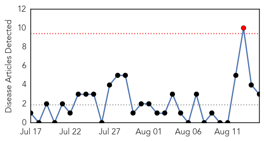
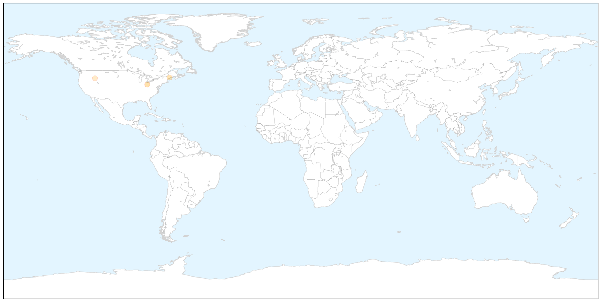
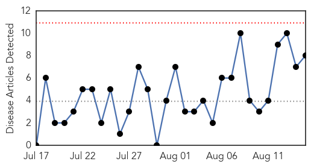
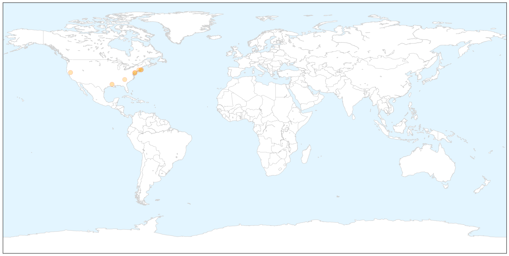

Pertussis
30-Day Web Trend
1 alerts, 0 warnings

30-Day Twitter Trend
0 alerts, 0 warnings

Article Locations

X

Article Confidences

Top Articles:
Top Tweets:
-
No tweets found for Aug 15, 2014
West Nile Virus
30-Day Web Trend
0 alerts, 0 warnings

30-Day Twitter Trend
0 alerts, 0 warnings

Article Locations

X

Article Confidences

Top Articles:
- 0.998
- Mosquito-borne illness chikungunya makes first appearances in La.
- 0.969
- Marion, Rochester mosquitoes test positive for EEE
- 0.968
- Delaware's First Finding of West Nile Virus in Wild Birds Report
- 0.945
- DNREC: First Case of West Nile Virus Detected in Delaware
- 0.890
- Two dead from West Nile virus in Sutter; Butte cases up to five
- 0.853
- Connecticut having mild mosquito season so far
- 0.820
- 2 confirmed cases of equine disease found in Darlington, Horry c
- 0.785
- West Nile virus found in Rhode Island mosquitoes
Top Tweets:
-
No tweets found for Aug 15, 2014